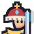
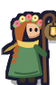
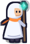
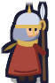
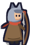
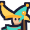

Профиль — сначала карточка: так тебя видят другие. Сцена — облик целиком на сумеречном небе с частоколом, свет и рамка — редкость облика. Аватар с уровнем, золотая галочка VIP (Р47). Под именем — выбранный знак. «Витрина» — три закреплённых достижения или знака с «есть у N%». Счёт и «По оружию» — то, ради чего игроки сравнивают себя.

«⋯» — сравнить рекорды, поделиться карточкой, пожаловаться
Карточка игрока — тап по любому игроку в рейтинге, друзьях, чате (Р48). Сцена с обликом, аватар со знаками (синяя галочка — доверенный аккаунт), место в сезоне, ключевые числа, все знаки с первыми пятью наверху. Действия: в друзья, подарок; в «⋯» — сравнить рекорды, поделиться картинкой с реферальной ссылкой, пожаловаться.
Знаки (теги): статусные выдаёт команда или покупка (VIP, Тестер, Меценат, Команда, Партнёр), заслуженные — игра (достижения, сезоны, друзья, стаж). Редкость — та же шкала, что у предметов. В списках — один выбранный знак рядом с именем; на витрину — до трёх. Закрытые видны силуэтом с условием — это цель, а не тайна.





Облик (Р49): сцена сверху показывает выбранный облик целиком, ниже — облики, окрасы и рамки аватара. Закрытый облик виден силуэтом с условием: уровень, задания, достижение, VIP, сезон, событие. За деньги — только конкретный облик, видный до покупки (Р11): Скоморох на ярмарке за самоцветы. Облик видно в забеге, арсенале, карточке, аватаре и на картинках бота.

Аватар-знак и строка списка: голова облика, рамка дивизиона, уровень, галочки. В строке рейтинга под именем — выбранный знак; на узком экране — только его значок. Топ-1 — тёплая подсветка строки, как у забираемой награды.